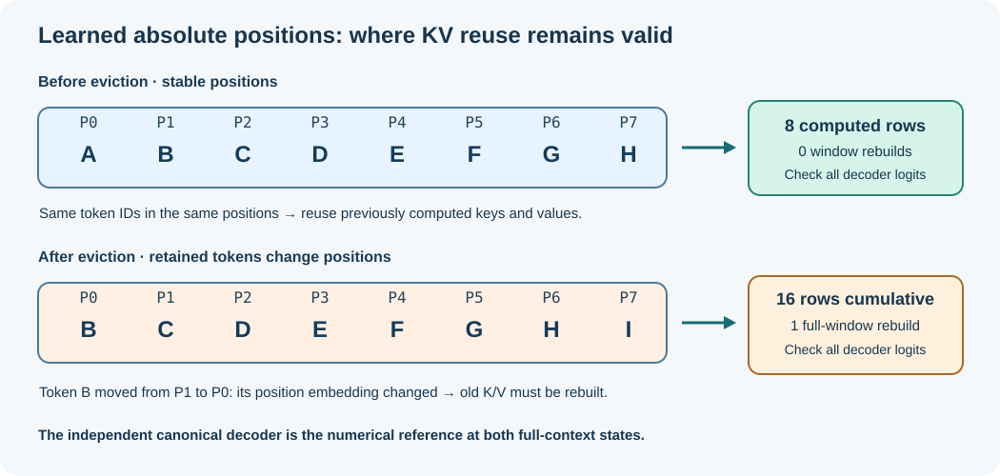

Learning objectives
Describe why learned absolute positions prevent simple KV reuse after an eviction, calculate the work of the first rollover, test it against the canonical decoder, and identify the checkpoint-compatibility decisions required before adopting a different positional-encoding scheme.
1. Why the ninth token is different
Consider an eight-token decoder context. While A, B, C, D, E, F, G and H are entered, their positions are stable: A is at position 0 and H is at position 7. When I arrives, the context can no longer contain all nine tokens. It must retain B through I. Now B moves from position 1 to position 0, C moves from 2 to 1, and so on.
The current decoder learned an independent vector for every absolute position. A key or value is calculated not from the token alone, but from the token embedding combined with the appropriate position embedding, followed by further attention-block operations. Therefore, the saved representation of B at position 1 is not generally the representation of B at position 0. Simply shifting a pointer or copying the old K/V row would silently change the model's mathematics.

2. What work the Framework performs
The existing cache owns the correct transition. First it computes eight rows while building a growing prefix. When I is appended to a full cache, it constructs the rolled sequence B through I and recalculates all eight rows with their new learned positions. The cumulative counter becomes sixteen and the full-window rebuild counter becomes one. This is not a memory leak or an incidental inefficiency introduced by the test: it is the necessary operation under the present absolute-position model.
| Observation | Before ninth token | After ninth token |
|---|---|---|
| Retained tokens | A through H | B through I |
| Token rows computed since cache creation | 8 | 16 |
| Full-context rebuilds | 0 | 1 |
| Last-row reference | Canonical decoder on A–H | Canonical decoder on B–I |
| KV reuse from old positions | Safe before eviction | Not safe after rebasing |
The qualification does not estimate future speed based on these counters. An implementation can use fewer rows but still be slower because of allocation, memory traffic and synchronisation. Conversely, a low-level matrix kernel can run faster without changing the number of rows. Measurement and correctness are related, but neither is a substitute for the other.
3. Numerical checks at the rollover boundary
Lesson 71 introduced UmiAiTrainingKvPositionQualify. Its second acceptance stage uses exactly the same model twice. The first path is the existing KV cache after Append(I). The second path is a fresh canonical UmiAiTrainingDecoderLogits call on B through I. The service compares every final-position vocabulary logit and refuses a report if any difference exceeds 0.00004 or either side contains a non-finite value.
UmiAiTrainingKvPositionQualification report = {0};
UmiStatus status = UmiAiTrainingKvPositionQualify(
decoder, contextIds, 8U, nextTokenId, &report);
if (status == UMI_STATUS_OK) {
/* Both stages matched the original decoder. */
printf("Rows after rollover: %" PRIu64 "\n",
report.computedRowsAfterRollover);
printf("Window rebuilds: %" PRIu64 "\n",
report.fullWindowRebuilds);
printf("Max rollover difference: %.8f\n",
(double)report.maximumAbsoluteDifferenceAfterRollover);
}This excerpt assumes the caller has included <inttypes.h> and <stdio.h>, owns an appropriately configured decoder and provides exactly eight valid context IDs. The function returns one report for both the last growing-prefix state and the first rolled state. Every error leaves that report unchanged.
4. Why changing the position system is a model migration
Many transformer architectures use relative-position strategies, rotary position embeddings (RoPE), or attention biases rather than the learned absolute-position vectors used here. Some of these schemes can support useful retained-key/value strategies, depending on how positions are assigned and how cache entries are transformed or evicted. But swapping position-handling rules in an already trained model is not an ordinary loop optimisation.
The decoder's learned parameters, inference equations, position numbering and possibly checkpoint schema would change. To make such a change responsibly, Umicom needs a new explicit configuration contract and a versioned migration decision. Existing learned-absolute checkpoints must never be reinterpreted as if they belonged to a different architecture. An acceptable path would separately train and evaluate the new model variant, preserve access to existing checkpoints through their original decoder and prove numerical behaviour for that specific new variant.
There is a useful distinction between backwards-compatible service interfaces and mathematically equivalent model outputs. A C function may keep the same name and ABI while being configured for a different model family. That does not mean the two model families produce identical logits. A compatibility table should record model type, checkpoint format, allowed inference backend and required evaluation gate independently.
5. A controlled development roadmap
The next improvement should not silently modify UmiAiTrainingKvCacheAppend or the canonical generation APIs. Start by collecting evidence across initialisation seeds, legal decoder shapes and trained checkpoints. Then propose one positional variant with an explicit schema and architecture ID. Validate the full training and inference graph, create a checkpoint conversion or retraining policy, benchmark realistic decoding windows, and promote the change only if both functional quality and performance gates pass.
For applications such as Umicom Studio's teaching assistant, this matters because an answer must not change unpredictably after a model update. For any future AI assistance inside Umicom Trader or Bank, repeatable model identity, restricted actions and audit are even more important. The educational model is a laboratory; it is not authorised to initiate live trades or payments.
6. Run the qualification and interpret the result
Set-Location 'C:\umicom\Umicom-Applications'
$env:Path = 'C:\msys64\ucrt64\bin;' + $env:Path
cmake --build .\build\windows-ucrt64-native-llm-prefix-debug `
--target umicom-native-llm-position-qualification --parallel 2
if ($LASTEXITCODE -ne 0) { throw 'Build failed.' }
& '.\build\windows-ucrt64-native-llm-prefix-debug\umicom-native-llm-position-qualification.exe'
if ($LASTEXITCODE -ne 0) { throw 'Qualification failed.' }A fully qualified eight-token educational case reports 8 computed rows before rollover, 16 cumulative afterwards, one complete window rebuild and 520 checked logits when vocabulary size is 260. Heap memory depends on the model shape. This result demonstrates correctness at the transition; it does not claim faster rolling-context generation.
Review and exercises
- If token B moves from absolute position 1 to 0, why is its old K/V representation usually invalid?
- For context length 16, what is the cumulative computed-row count immediately after the first full-window rebuild?
- Why is a checkpoint-format compatibility decision separate from public C ABI compatibility?
- What additional evidence would be required before promising a generation throughput improvement?
- Design a regression table covering empty prompts, short prompts, first eviction, repeated evictions, invalid token IDs, training invalidation, trained checkpoints and model-quality comparison.
Engineering conclusion: The safe boundary is now explicit: reuse when learned token positions are stable; rebuild when they change. A different positional model must be introduced only through an independently qualified, checkpoint-aware architecture decision.